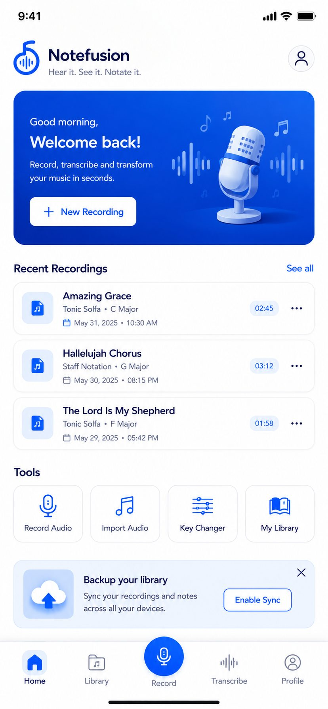

Tonic Solfa, done right
True movable-do. Doh follows the key, minors are la-based, and chromatics get their proper syllables — de, ra, fe, se, ta — not a fudge.
Sing it, play it, or hold up your phone to the choir. NoteFusion listens and writes the music out properly — movable-do Tonic Solfa and staff notation, with the key, tempo and time signature worked out for you.
Free to start. No card. Your audio is deleted the moment the job finishes.

You do not need to read a stave, count a bar, or know what key you are in. That is the whole point.
Tap the mic and sing, play, or capture the rehearsal in the room. Already have the audio? Import a file from your phone.
Pitch, rhythm, tempo, time signature and key — detected on our own servers, not handed to a third-party AI. Every result carries an honest confidence score, so you know what to double-check.
Get Tonic Solfa and staff notation side by side. Play it back, save it to your library, or send it to the whole team.
Built with worship teams, music teachers and self-taught musicians in mind — the people who hear a part once and have to teach it to twenty others by Sunday.
True movable-do. Doh follows the key, minors are la-based, and chromatics get their proper syllables — de, ra, fe, se, ta — not a fudge.
The same performance rendered on a stave, exportable as MusicXML — so it opens in MuseScore, Sibelius or Finale without retyping a note.
Too high for the sopranos? Pick a new key and the solfa re-labels instantly. Nothing is re-recorded and nothing is re-analysed — the notes were always right.
Every transcription tells you how sure it is, per result. A busy room and a clean solo voice are not the same job, and we will not pretend otherwise.
Everything you save syncs across your devices, titled and searchable, with the key and tempo on the card. Rename, re-key or delete any time.
Your recording is transcribed and then deleted — usually within seconds. We keep the notation, never the sound, and we never train models on it.
Every transcription tool on the market was trained on Western classical and pop. Point one at a Yoruba chorus, a highlife guitar line or an Afrobeat log-drum and it falls apart.
African Mode is tuned for exactly that material — dense percussion, call-and-response, vocal-led choruses, and the songs your congregation already knows but nobody ever wrote down.
Sample output
Doh is D · 4/4 · 100 BPM
| d : d | r : m | f : m | r : — |
| m : f | s : l | s : f | m : — |
Movable-do, so the same chorus reads identically whatever key you move it to. That is what makes it teachable.
Everyone gets real transcription on the free tier — not a watermarked demo. Pay only when NoteFusion is doing enough work to be worth it.
Enough to transcribe your Sunday chorus and see the thing work.
For the person who transcribes every week and teaches from it.
One library for the whole music department or worship team.
Prices shown in Naira. Billed through Google Play. Cancel any time.
No. That is what Tonic Solfa is for. If you can sing doh re mi, you can read what NoteFusion gives you. The staff notation is there for when you need to hand it to someone who does read.
A clean solo voice or a single instrument in a quiet room transcribes very well. A full band in a live room is harder, and dense polyphony is harder still. Rather than hide that, every result carries a confidence score so you know when to check it. We would rather you trust the number than the marketing.
The audio is transcribed and then deleted from our servers — usually within seconds, always as soon as the job finishes. We keep the notation, not the sound. It is never reviewed by a person, never sold, and never used to train models. See the privacy policy.
A transcription mode tuned for material the standard models handle badly: dense percussion, call-and-response choruses, vocal-led Afrobeat and hip-hop. It changes how we listen — not what solfa means. Movable-do stays movable-do.
Yes, and it is instant. Changing key re-labels the solfa; it never re-analyses the audio. The notes were already correct — only the name of doh moves.
Yes. What you record and what you save belongs to you. If you choose to submit a chorus to the public African Tunes & Choruses library, it is reviewed for accuracy first, and you are credited. Nothing is published without you asking for it.
Android first. The app is built cross-platform, so iOS follows — join the list at hello@notefusion.app and we will tell you when it lands.
Free to start, no card, and your audio never sticks around. Record something tonight and see what comes back.